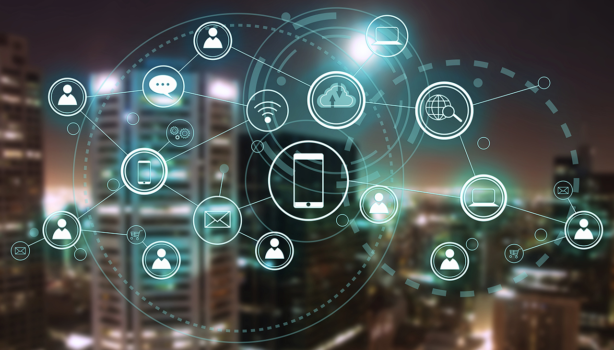
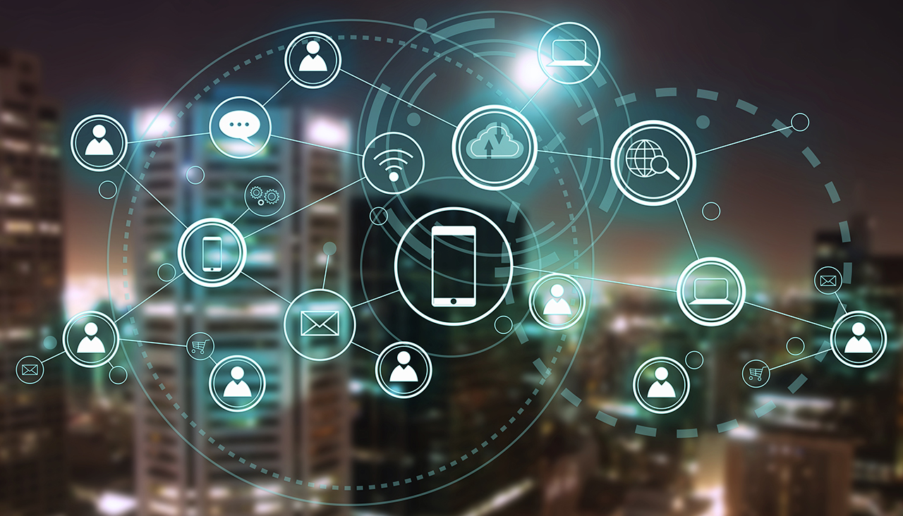

WHAT IS THE IoT?
The Internet of Things (IoT) refers to a network of physical devices, vehicles, appliances, and other physical objects that are embedded with sensors, software, and network connectivity, allowing them to collect and share data.
IoT devices—also known as “smart objects”—can range from simple “smart home” devices like smart thermostats, to wearables like smartwatches and RFID-enabled clothing, to complex industrial machinery and transportation systems. Technologists are even envisioning entire “smart cities” predicated on IoT technologies. IoT enables these smart devices to communicate with each other and with other internet-enabled devices. Like smartphones and gateways, creating a vast network of interconnected devices that can exchange data and perform various tasks autonomously.
The potential applications of IoT are vast and varied, and its impact is already being felt across a wide range of industries, including manufacturing, transportation, healthcare, and agriculture. As the number of internet-connected devices continues to grow, IoT is likely to play an increasingly important role in shaping our world. Transforming the way that we live, work, and interact with each other.
In an enterprise context, IoT devices are used to monitor a wide range of parameters such as temperature, humidity, air quality, energy consumption, and machine performance. This data can be analyzed in real time to identify patterns, trends, and anomalies that can help businesses optimize their operations and improve their bottom line.
Why Is IoT Important?
IoT is important for business for several r,easons. Here are the core benefits of IoT:
Improved efficiency
By using IoT devices to automate and optimize processes, businesses can improve efficiency and productivity. For example, IoT sensors can be used to monitor equipment performance and detect or even resolve potential issues before they cause downtime, reducing maintenance costs and improving uptime.
Data-driven decision-making
IoT devices generate vast amounts of data that can be used to make better-informed business decisions and new business models. By analyzing this data, businesses can gain insights into customer behavior, market trends, and operational performance, allowing them to make more informed decisions about strategy, product development, and resource allocation.
Cost-savings
By reducing manual processes and automating repetitive tasks, IoT can help businesses reduce costs and improve profitability. For example, IoT devices can be used to monitor energy usage and optimize consumption, reducing energy costs and improving sustainability.
Enhanced customer experience
By using IoT technology to gather data about customer behavior, businesses can create more personalized and engaging experiences for their customers. For example, retailers can use IoT sensors to track customer movements in stores and deliver personalized offers based on their behavior.
 
